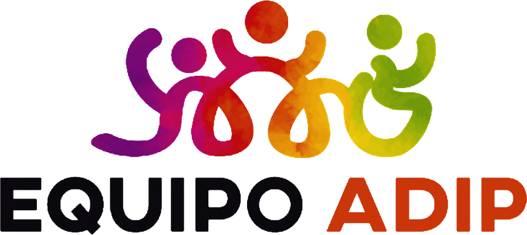

Las familias de Equipo ADIP comparten su experiencia.
Desde que pisamos el lugar, es amor, respeto, empatía,
saben entender las inseguridades como familia, e identificar las necesidades de mi hijo... en lo personal, no tengo más que agradecimiento, y 100% confiable, poseen cámaras en todos los espacios, las referentes y coordinadoras tienen una calidez humana hermosa... Gracias Equipo ADIP por sacar adelante a mi hijo!
Sabrina
Excelente centro. Quiero destacar la organización en la entrada y salida de los chicos, siempre con mucho orden, paciencia y cuidado.
Las personas que están en la puerta son muy amables, atentas y siempre dispuestas a ayudar, te hacen sentir tranquilo al dejar a tu hijo.
Y los maestras un 10, con mucha dedicación, cariño y compromiso con cada chico.
Se nota que aman lo que hacen.
Super recomendable para todas las familias. Gracias ADIP por tanto!
Walter
Estoy sumamente conforme y agradecida de haber encontrado un lugar como este.
Es una institución excelente, donde se nota el compromiso, la vocación y, sobre todo, el amor con el que trabajan.
[…] Se nota que detrás de cada intervención hay mucho conocimiento, pero también una enorme sensibilidad, empatía y respeto por las necesidades individuales de cada uno.
Es un lugar donde los chicos son verdaderamente escuchados, acompañados, valorados y contenidos.
Cintia · sigue
Como mamá, no hay nada más importante que sentir tranquilidad y confianza al saber que tu hijo está en manos de personas que trabajan con tanta dedicación y vocación.
Mi reconocimiento y agradecimiento a todo el equipo por la enorme labor que realizan. […]
Sin dudas, un lugar que recomiendo con los ojos cerrados.
Cintia
Adip fue para mi hijo y para mí un lugar seguro.
Un espacio en el que no hubo rechazo, en el que recibimos apoyo y contención. Y con esa plataforma, ambos pudimos desarrollarnos y tener un presente prometedor. Gracias.
Ines
Mi hija asiste desde este 2026 al CET, estamos muy contentos como vemos que trabajan con tanta dedicación, responsabilidad y amor.
Ella va contenta al CET.
Y seguirá yendo el próximo año.
Milu
Cada experiencia compartida nos ayuda a seguir construyendo un acompañamiento cercano.
Si querés conocer más sobre Equipo ADIP, escribinos.